竖式装箱压缩转运工艺
源自荷兰 中国首创 服务全球
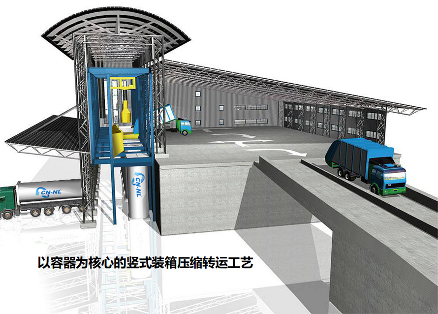
竖式装箱压缩转运工艺源自荷兰，2002年随中荷环保一起进入中国。
中荷环保是竖式压缩工艺在中国的原创者，其简捷、高效、节能、环保的工艺和设备已经得到了海内外市场的广泛认可和一致好评，并吸引了国内环卫行业部分企业的争相效仿。
中荷环保竖式装箱压缩转运工艺，充分运用力学原理，就如同将垃圾扔进竖直摆放的垃圾桶般轻松易行，即收集车将垃圾倾倒入竖直摆放的容器内，利用垃圾本身的重量自压，再借助压实器进行垂直压实，压缩效果更好，环境效果更佳，既节约能耗又环保高效。
| 工艺设备 |
竖式装箱压缩转运工艺的设备既相互关联又相对独立，衔接简单、易于维护，配合中央监控系统、称重计量系统和除尘除臭系统，可达到科学、高效、环保的运行效果。
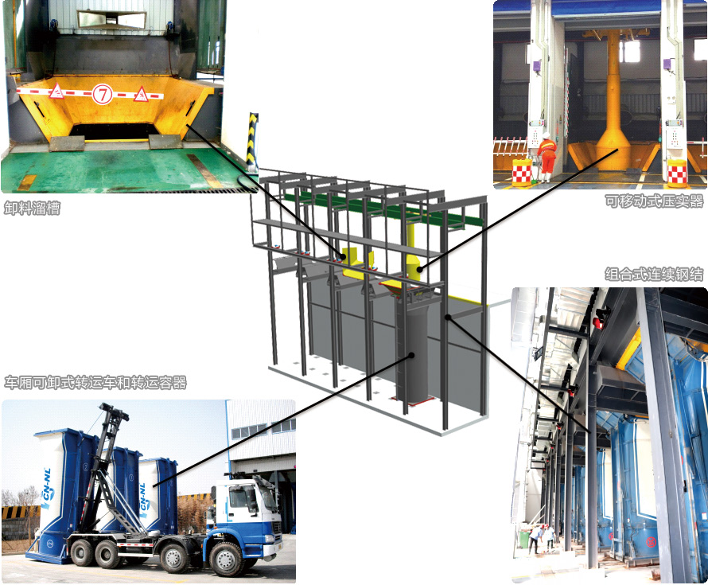
可移动式压实器设备特点
一机多位
压实器可移动到需要压缩的泊位上方，对垃圾进行垂直压缩，一台压实器可对应4~5个泊位。
压缩能耗低
压缩功率仅为30kw
压缩减容效果好
利用设备自身重力对垃圾进行垂直压缩，压实力可达300kN。
自动化程度高
压实器通过PLC程序控制，所有动作和功能可通过遥控操作实现。
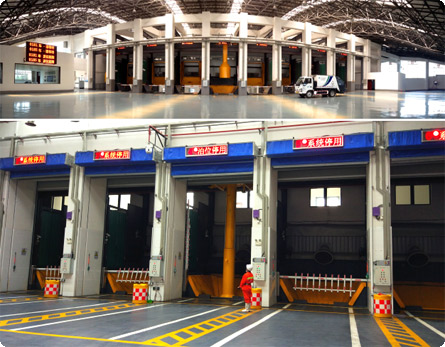
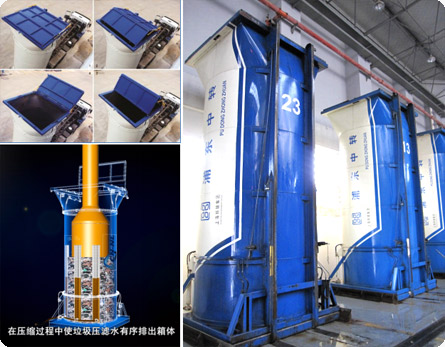
垃圾转运容器特点
容器自重轻，装载量大
额定载质量15吨
受力合理
筒体圆柱形，受力均匀不易变形
易于装卸料
卸料后容器内无残留垃圾
防腐能力强
筒体材质高强度、耐腐蚀
密封性好
作业及转运过程无“跑冒滴漏”
排水性好
可实现垃圾渗滤液有序、密闭排放
车厢可卸式垃圾转运车特点
装载量大
整车自重轻，可装载的垃圾量更大（满载总质量31吨）
牵箱灵巧快捷
压缩功率仅为30kw
压缩减容效果好
采用钢丝牵引，实现了将容器 “柔性”牵引装卸和“动态”的牵引角度，有效缓解对上装机构及汽车底盘的“集中”承载
一车多能
转运车不仅用于垃圾的长距离运输，还用于背放容器、站内搬运、末端处置场卸料等
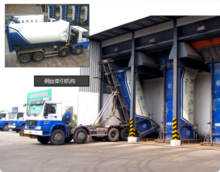
| 转运站方案类型 |
可根据不同城市、乡镇的地域、环境、人口、垃圾量等实际情况，提供不同类型的转运站建设方案。
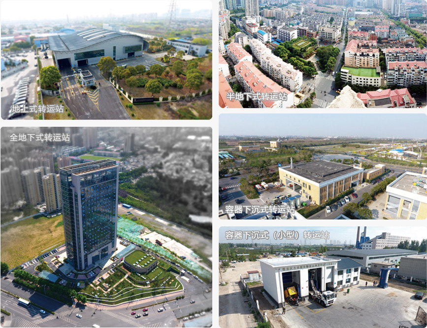
地上式转运站
转运站站房整体建于地上，卸料作业区位于二层，转运作业区则位于水平地面（标高±0.000）。该类型转运站外观设计形式可分为“地上半包式”和“地上全包式”
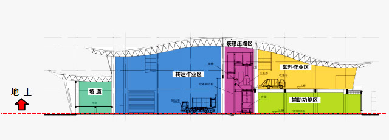
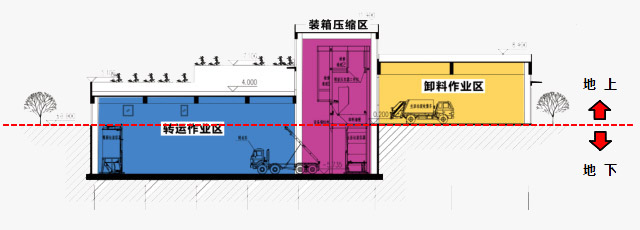
半地下式转运站
转运站站房一半建筑结构建于地下，卸料作业区位于水平地面（±0.000）；转运作业区则位于地下一层。 该类型转运站可在站房屋顶上设置景观绿化及休闲花园（根据需要设计配置），增加城市绿化面积，美化环境。
全地下式转运站
转运站站房整体建于地下，卸料作业区位于地下一层；转运作业区则位于地下二层。 该类型转运站将整个工作区域完全建设在地下，站房上方可设计花园广场，通常可建设在公园、广场、城市公共绿地的下方，解决垃圾转运站选址难的问题。
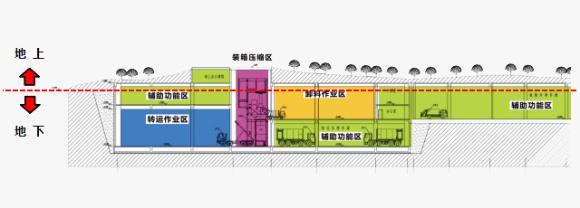
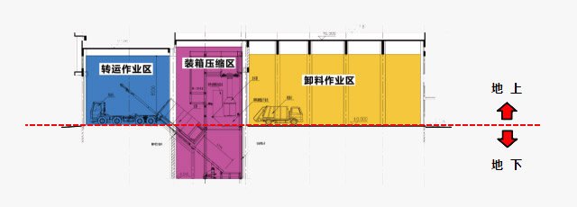
容器下沉式转运站
转运站卸料作业区与转运作业区均位于水平地面（标高±0.000），而装箱压缩区容器置于地下基坑内，该结构形式转运站无上下行坡道，大大节省了用地面积，节省了土建成本。
容器下沉式（小型）转运站
转运站卸料作业区及转运作业区为同一场地，省去了坡道，收集车和转运车在互不干涉的情况下可在该场地同时实施作业。 该类型转运站（以下简称“小压站”），只适用于50~150吨/天的转运规模，比较适合建于乡（县）等相对地方较小、垃圾量较少的地方， 且转运站占地面积更小，投资及运营成本更低、方便统一管理、提高垃圾运输效率、改善乡（县）环境、可同时服务多个乡（县），实现城乡一体化发展。
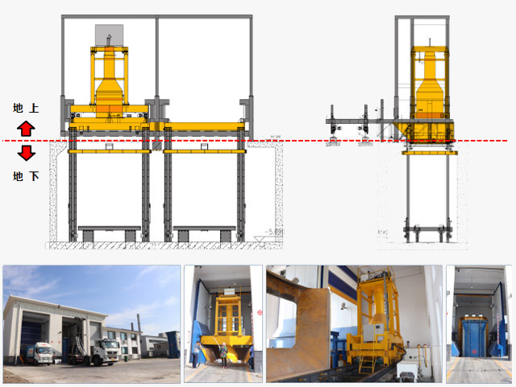
| 工艺特点 |
1、简捷高效
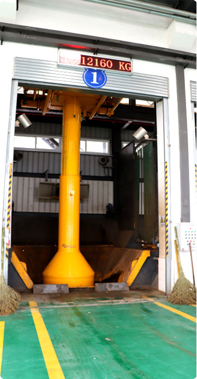
设备简捷衔接简便，垃圾直接在容器中压缩、转运，没有推料、预压等环节，且垃圾压缩利用了垃圾自重，每箱压缩次数仅为2-3次。
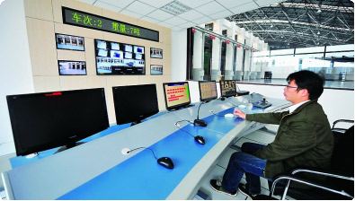
垃圾收集车进站后自动计量，在中央控制系统引导下自动派位至指定泊位进行卸料作业。
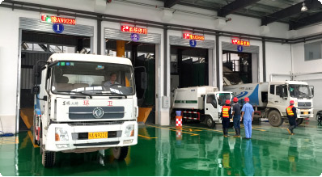
通过容器、车辆的合理配置和调度，可安排多部车辆同时卸料，有效应对作业高峰。
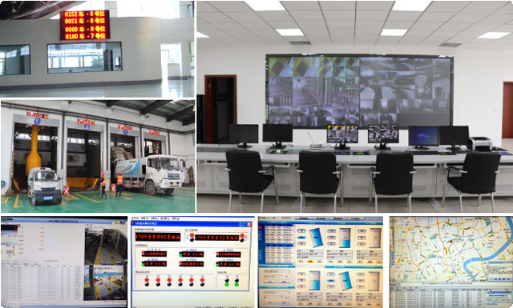
站内配套的中央控制管理系统及视频监控系统，保证转运站运行科学、高效。
2、节能降耗
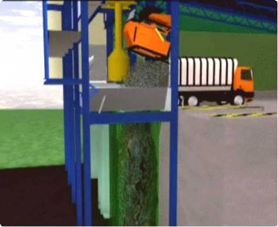
垃圾直接卸入容器，依靠垃圾自重及压实器自上而下压实垃圾，使容器内垃圾的密实度增大，满足压实要求的最大功率仅为30kW，压实垃圾的动力消耗低。
车厢可卸式垃圾转运车
》柔性牵引
》总质量31吨
》整车整备质量≤13吨
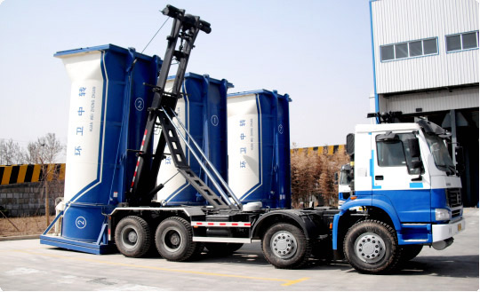
3、科学环保
>> 臭气控制
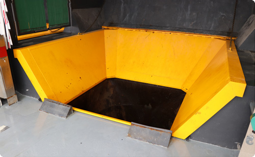
1. 垃圾暴露时间短
卸料作业快
装载时间短
垃圾无停留
2. 垃圾臭气挥发面积小
容器受料口面积小
（单个容器2.5X2.6米）
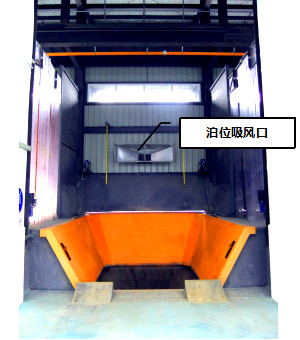
5. 泊位吸风口收集废气
卸料泊位上方安装有中央集气口，每个泊位吸风量不低于1万立方米/小时
6. 建筑内部形成负压
转运站内作业区和办公区有效隔断。
在作业期间，作业区形成微负压
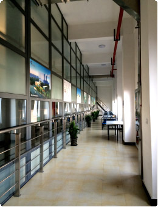
9. 作业区配置离子新风
离子新风系统：每小时卸料区可更换新风≥10次
10. 排风口高度控制，废气达标排放
根据国家标准，达标排风口高度不低于15米 废气排放确保符合《恶臭污染物排放标准》（GB14554-93）
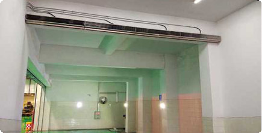
3. 转运站出入口配置风幕
不间断风幕，有效阻止站内气体外溢。
4. 卸料泊位配置快速堆积门
快速隔离1.0米/秒。
有效分隔气源，便于中央集气系统工作。
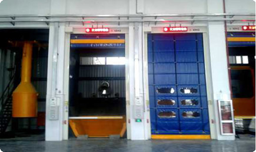
7. 前端植物液喷淋除臭
采用纯天然植物喷淋液，捕捉包裹臭味因子，去除异味净化空气。
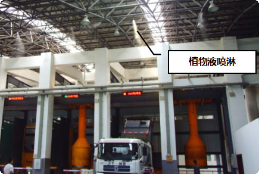
8. 末端除尘脱臭
采用二级化学洗涤法和水浴法结合去除收集气体中的二氧化硫、氮氧化物、硫化氢、二甲硫、二丙烷硫醇、二丁烷硫醇等臭气主要成分，除臭率高于95%。
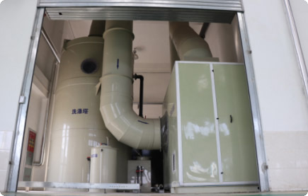
>> 尘埃控制
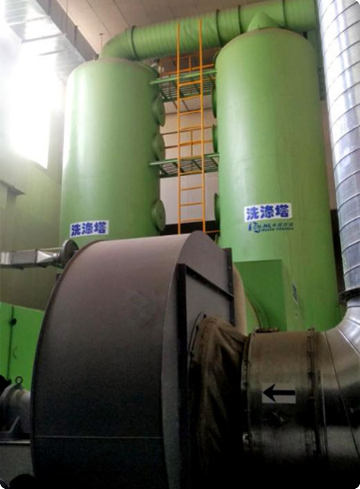
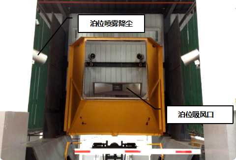
泊位喷雾降尘系统有效阻止异味气体扩散和局部降尘； 采用水浴法对通过泊位吸风收集的尘埃进行洗涤，除尘率高于95%。
>> 噪音控制
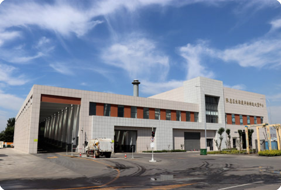
地上全包式、半地下式、全地下式等建筑结构形式的转运站，所有作业环节均在建筑内部完成，可有效隔绝作业过程中产生的噪音。
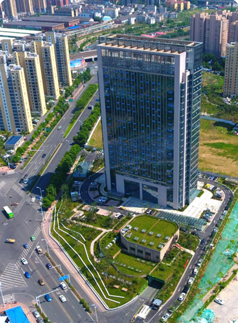
>> 污水管控
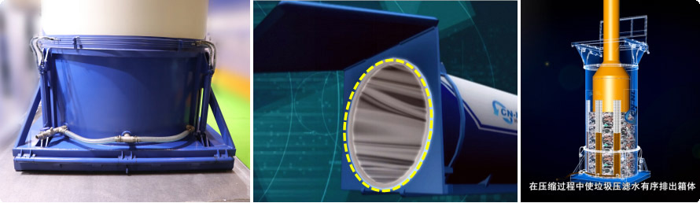
地上全包式、半地下式、全地下式等建筑结构形式的转运站，所有作业环节均在建筑内部完成，可有效隔绝作业过程中产生的噪音。
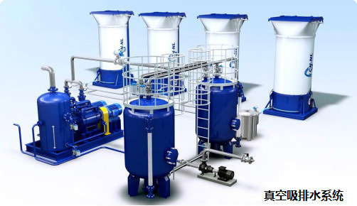
>> 视觉控制
当容器内装满垃圾后，压实器自上而下压实容器内垃圾，压实器回位时，被压缩的垃圾会反弹，但仍在容器内，因此垃圾不会散落在容器外，对环境造成污染。
由于垃圾垂直装箱，且容器密封性好，因此垃圾在运输途中无抛洒滴漏和垃圾夹带等现象，不影响道路环境和城市形象。
4、占地面积小
竖式装箱压缩工艺，无需料槽、推料机、压缩机等设备，且容器竖直放置在泊位，因此设备占地面积小，卸料作业区下层可充分利用。
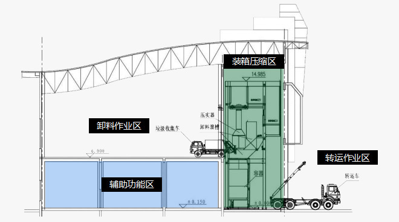
5、运营维护简便
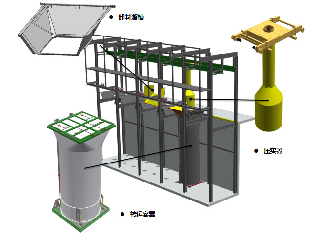
竖式压缩工艺设备简捷相对独立，衔接简便不易损坏，维修率低。单独泊位检修时也不影响其他泊位，保证转运站的正常运行。
6、建筑形式多样
中荷环保——“艺术环卫”的倡导者
最早提出并践行花园式生态环保垃圾转运站
此外中荷环保还拥有多种其它建筑形式和结构的转运站。
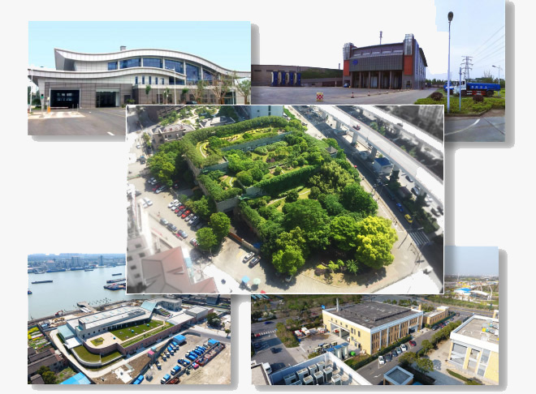
7、可持续发展
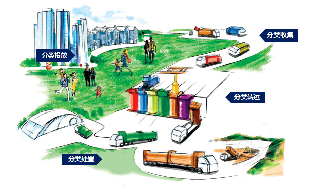
竖式装箱压缩转运工艺各设备衔接相对独立，垃圾收集车将已分类的垃圾卸入不同泊位的转运容器内，实现垃圾的分类转运，仅通过对泊位和垃圾转运容器颜色的区分，便可轻松实现垃圾进入不同类别泊位的转运容器后运至不同的处置场所。简捷高效的竖式装箱压缩转运工艺让垃圾分类转运变得更加简单！
兼容餐厨垃圾转运
——在分类转运基础上的延伸
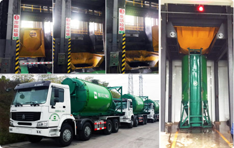
更具合理性的餐厨垃圾转运设备
餐厨垃圾是固液混合物，竖直放置的容器更适合承装餐厨垃圾。针对餐厨垃圾转运设计的转运容器和卸料溜槽，配合与生活垃圾通用的转运车，即可顺利完成餐厨垃圾转运。
更具适用性的餐厨垃圾转运工艺
竖式压缩转运工艺具有广泛的适用性，即餐厨垃圾转运站仅需设置一套兼容型卸料溜槽，就可兼容生活垃圾转运。同样，生活垃圾转运站可在原有工艺基础上配置餐厨垃圾专用设备，即可实现餐厨垃圾转运。
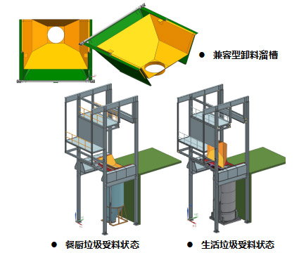